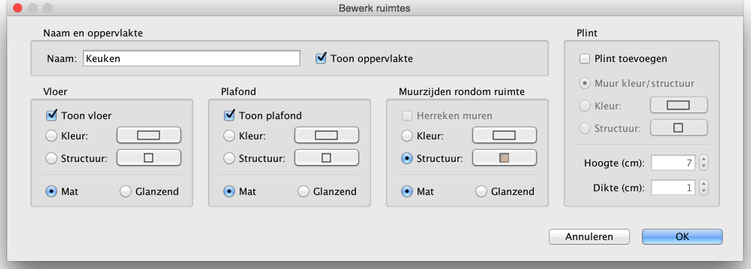

| Ruimtes aanpassen | |||
Je kunt de locatie van ruimtes van een huis bewerken met de muis, nadat je ze geselecteerd hebt in de plattegrond door erop te klikken. Wanneer één ruimte is geselecteerd in de plattegrond, kun je ieder van zijn punten verschuiven met de puntindicatoren die verschijnen op ieder punt van de geselecteerde ruimte. Je kunt ook de tekst verschuiven die zijn naam weergeeft en degene die de oppervlakte weergeeft, als ze zichtbaar zijn.
|

|
Wanneer de muisaanwijzer op één van deze indicatoren rust, wijzigt hij om aan te geven dat je dat punt of die tekst kunt slepen. Terwijl je de linker muisknop indrukt, helpen uitlijn-lijnen en het magnetisme van muren je om een hoek van de ruimte of een andere locatie te vinden. De naam en de eigenschappen van een ruimte kunnen ook worden bewerkt in het paneel, dat verschijnt wanneer je erop dubbelklikt in de plattegrond of door te kiezen voor Plattegrond > Bewerk ruimtes... als je er een geselecteerd hebt.  In dit paneel kun je de naam van de geselecteerde ruimte wijzigen en of de oppervlakte weergegeven moet worden in de plattegrond of niet. Wanneer de geselecteerde ruim één of meer muren raakt of er erg dichtbij is, wordt in het venster Bewerk ruimte ook de optie Muur zijden rondom ruimte weergegeven, waar je de kleur of textuur van de zijden van de muur kunt laten berekenen die langs de ruimte of in de ruimte liggen. Indien nodig, kun je in deze sectie op Herbereken muren klikken, waarmee muren automatisch worden gesplitst en verspreid over andere nabijgelegen ruimtes.
|


|